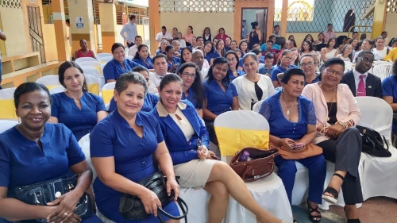
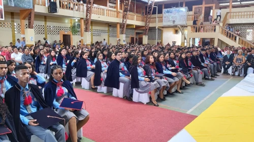
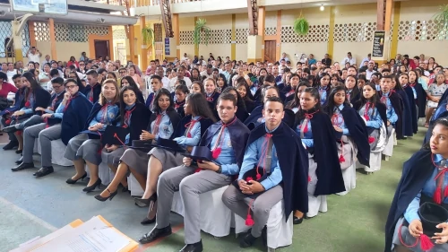
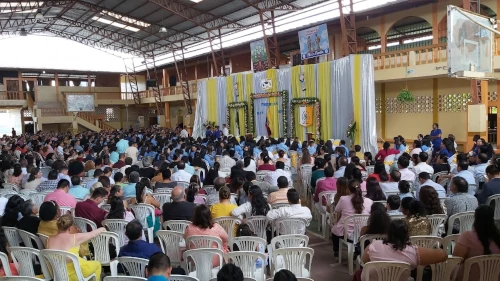
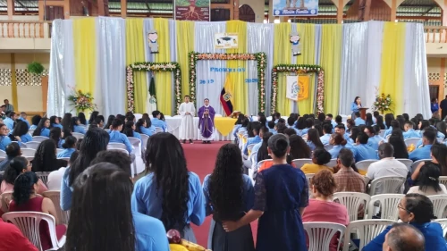
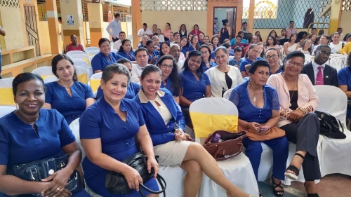
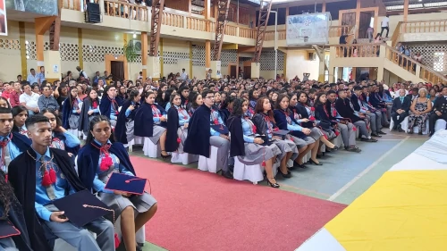
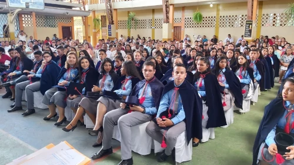
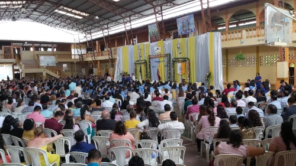
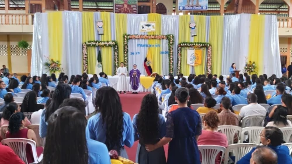

Juranmento de bandera
25/09/2020
Cuadro de honor del presente año escolar 2020-2021, integrado por abanderados y escoltas, que serán proclamados el día viernes 25-09-2020 a partir de las 10h30 en programa cívico, transmitido de manera virtual por facebook live.
Fiesta de la Lectura 2020 del Programa YO LEO
15/09/2020
#Fortaleciendo los hábitos de lectura de los estudiantes de nuestra Unidad Educativa y potenciando la parte intelectual y emocional de cada uno de ellos, se llevó a cabo la FIESTA DE LA LECTURA 2020 en la UNIDAD EDUCATIVA FISCO MISIONAL “JUAN XXIII” los jóvenes participaron escribiendo Micro relatos “LA VIDA EN LAS VENTANAS” y grabación de videos “LECTURA EN VOZ ALTA” a través de experiencias lectoras y escritura creativa. Actividades realizadas por los estudiantes de la Básica Superior y Bachillerato.
COMPARTIREMOS DIA A DIA ALGUNOS SELECCIONADOS TANTO DE LOS MICRORRELATOS Y VIDEOS.
Agradecer a todos los estudiantes participantes y animarle para que sigan fomentando la lectura-escritura.
INDICACIONES Y PROTOCOLOS DE BIOSEGURIDAD PARA LA ENTREGA DE PORTAFOLIOS
21/08/2020
INDICACIONES Y PROTOCOLOS DE BIOSEGURIDAD QUE DEBEN
CUMPLIR LOS PADRES DE FAMILIA O PERSONAS QUE SE ACERQUEN
A ENTREGAR LOS PORTAFOLIOS:
• L a entrega se realizará en la institución, en horario de 08h00 a 13h00, de acuerdo a calendario establecido del 31 de agosto al 16 de septiembre 2020.
• Los portafolios serán recibidos por los tutores o su delegado(a).
• El padre/madre de familia o representante emitirá su valoración de hasta un (1) punto en la carátula del portafolio, adjuntado su firma.
• La valoración del portafolio se hará en base a una rúbrica dispuesta por el Ministerio de Educación.
• Se verificará que el padre, madre o representante legal del estudiante, acuda con cubrebocas, (mascarilla de tela, descartable, o quirúrgica), que proteja su boca y nariz , caso
contrario no se le permitirá el ingreso a la institución.
• Ingresará una sola persona a entregar el portafolio(s),
recomendar no ir acompañado de niños, o personas de la tercera edad.
• No se admitirá el ingreso a entregar los portafolios, a niños, adolescentes o personas de la tercera edad.
• Una vez entregado el portafolio(s) se retirará enseguida de las instalaciones.
CRONOGRAMA PARA LA ENTREGA DE KITS ALIMENTICIOS
17/08/2020
PROTOCOLOS DE BIOSEGURIDAD QUE DEBEN CUMPLIR LOS
PADRES DE FAMILIA O PERSONAS QUE SE ACERQUEN A
RETIRAR LOS KITS ALIMENTICIOS:
• Se verificará que el padre, madre o representante legal del
estudiante, acuda con guantes, cubrebocas, (mascarilla de tela, descartable, o quirúrgica), que proteja su boca y nariz , caso contrario no se le permitirá el ingreso a la institución.
• Ingresará una sola persona a retirar los kits, recomendar no ir acompañado de niños, o personas de la tercera edad.
• No se admitirá el ingreso a retirar los kits, a niños, adolescentes o personas de la tercera edad.
• Una vez entregado su kit de alimentos se retirará enseguida de las instalaciones.
• Si tiene más de un estudiante retirará los kits de todos
5 de Agosto
05/08/2020
5 de agosto 1820 germen de la libertad la revolución de rio verde se cumplen 200 años de la gesta heroica que enorgullece a los esmeraldeños y que proclamó a rio verde como la “cuna de la independencia del ecuador y de Latinoamérica”, pues, fue en este hermoso lugar de la geografía provincial donde se prendió la antorcha libertaria, el 5 de agosto de 1820.
Un hecho que es parte ya de la historia de esmeraldas, pero vale la pena recordarlo para las presentes y futuras generaciones, considerando que el 5 de agosto de 1820 se dio en esta población el movimiento de la independencia de la provincia de esmeraldas, posteriormente se lo hace en Guayaquil, el 9 de octubre del mismo año, para terminar en las faldas del pichincha, el 24 de mayo de 1822.
INDICACIONES PARA ENTREGA DE TEXTOS A PADRES - MADRES DE FAMILIA
19/06/2020
INDICACIONES PARA ENTREGA DE TEXTOS A PADRES -MADRES DE FAMILIA Y/O REPRESENTANTES LEGALES
1.- LA ENTREGA DE TEXTOS PARA LOS ESTUDIANTES SE REALIZARÁ DE MANERA ORGANIZADA CUMPLIENDO LOS PROTOCOLOS DE BIOSEGURIDAD DEL LUNES 22 DE JUNIO AL VIERNES 10 DE JULIO DEL 2020, EN BASE A UN CALENDARIO QUE LO COMPARTIMOS A CONTINUACIÓN.
2.- EL RESPONSABLE PARA RETIRAR LOS TEXTOS ES EL REPRESENTATE LEGAL, QUIEN SE PRESENTARÁ CON SU CÉDULA DE IDENTIDAD Y FIRMARÁ EL ACTA DE ENTREGA RECEPCIÓN.
3.- SE CUMPLIRÁ CON UN HORARIO DE ENTREGA DIARIO; DE 08H00 A 11H30.
4.- LA ENTREGA SE LA REALIZARÁ EN LOS PATIOS DEL COLEGIO DE NUESTRA UNIDAD EDUCATIVA.
5.- LOS REPRESENTATES LEGALES ASISTIRÁN CON MASCARILLA Y VESTIMENTA ADECUADA PARA MINIMIZAR EL RIESGO DE CONTAGIO DE LA COVID-19.
6.- ENTRARÁN POR LA PUERTA DE LA RANFLA CENTRAL Y SE SUJETRÁN A LAS MEDIDAS DE BIOSEGURIDAD ORGANIZADAS EN EL INTERIOR DEL RECINTO.
7.- ÚNICAMENTE ASISTIRÁ UNA SOLA PERSONA POR ESTUDIANTE, QUE ES EL REPRESENTATE LEGAL, ESTA PROHIBIDO LA ASITENCIAS DE NIÑOS Y PERSONAS DE LA TERCERA EDAD.
8.- UNA VEZ RECIBIDO LOS TEXTOS ESCOLARES, SE RETIRARÁ INMEDIATAMENTE DEL RECINTO EDUCATIVO.
INAUGURACIÓN DEL AÑO LECTIVO 2020-2021.
01/06/2020
INAUGURACIÓN NUEVO AÑO ESCOLAR 2020-2021.
Promoción de bachilleres
28/02/2020
Incorporación de nuevos bachilleres promoción 2019-2020.
Felicitaciones.
 









Promoción de bachilleres
24/01/2020
Estudiantes de tercero del bachillerato acompañados de sus tutores y equipo de pastoral participan de convivencia de graduación, preparándose también espiritualmente para incorporarse como nuevos bachilleres de la patria.